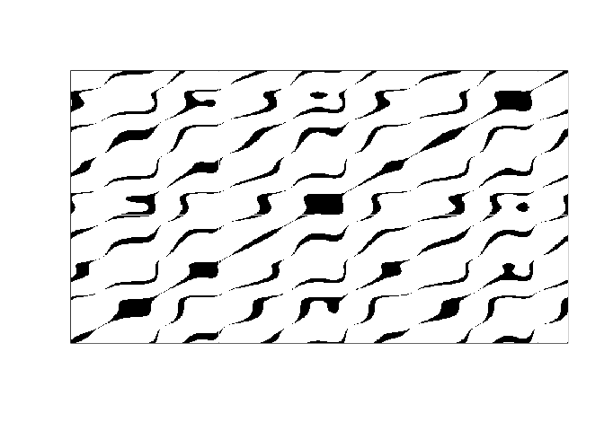

Nonlinear Time Series Analysis with R is package dedicated to provide tools derived from dynamical system theory for purpose of analysis nonlinear properties of time series. Developed version will contain things like:
- Estimation of embedding dimension and time lag
- Attractor reconstruction with machine learning
- Complex network approaches - visibility graph, transfer and recourrence networks
- Measures of fractal dimension, entropy production and irreversibility
Example
Creation of recurrence matrix from time series.
library(ntsar) set.seed(448) n = 500 periodic_series <- (sin(1:n/16) + cos(1:n/10)/2 + tan(1:n/20)) plot(periodic_series, type = 'l')

recurrence_matrix(periodic_series, 0.5) %>% image(col=gray.colors(2, start = 1, end = 0), xaxt='n', yaxt='n')
